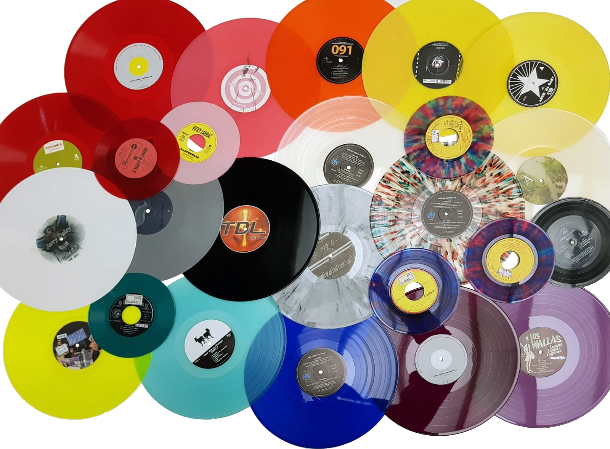

Technoteka
Los Orígenes de la Música Techno
La músiquita techno es un género de música electrónica que surgió en Detroit, Estados Unidos, a mediados de la década de 1980. Este estilo de música se caracteriza por su sonido futurista y su fuerte enfoque en los ritmos y secuencias repetitivas.
Influencias y Desarrollo
El techno tiene sus raíces en la música electrónica de los años 70, influenciado por pioneros como Kraftwerk, Giorgio Moroder y el movimiento de música disco. Los primeros productores de techno, como Juan Atkins, Derrick May y Kevin Saunderson, combinaron estos elementos con el espíritu del punk y el funk para crear un sonido nuevo y emocionante.
La Escena Techno Hoy
Hoy en día, la música techno sigue siendo una fuerza dominante en la escena de la música electrónica, con festivales y clubes en todo el mundo dedicados a este estilo. Artistas contemporáneos continúan innovando y llevando el género a nuevas alturas.